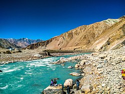
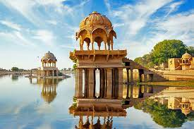

| Destination | Details |
|---|
Statue of Unity | The Statue of Unity is a statue of Indian statesman and independence activist Vallabhbhai Patel, who was the first deputy prime minister and home minister of independent India and an adherent of Mahatma Gandhi. |
Taj Mahal | The Taj Mahal, is an ivory-white marble mausoleum on the right bank of the river Yamuna in the Indian city of Agra. It was commissioned in 1632 by the Mughal emperor Shah Jahan to house the tomb of his favourite wife, Mumtaz Mahal; it also houses the tomb of Shah Jahan himself. |
| Ladakh | Ladakh is a region administered by India as a union territory, and constitutes a part of the larger Kashmir region, which has been the subject of dispute between India, Pakistan, and China since 1947. |
India Gate | The India Gate is a war memorial located astride the Rajpath, on the eastern edge of the "ceremonial axis" of New Delhi, formerly called Kingsway. |
Gateway of India | The Gateway of India is located on the waterfront at Apollo Bunder area at the end of Chhatrapati Shivaji Marg in South Mumbai and overlooks the Arabian Sea. The monument has also been referred to as the Taj Mahal of Mumbai, and is the city's top tourist attraction.Apollo Bunder was used as a jetty in earlier days and later renovated to literally act as the 'gateway to India'. As the name signifies, this monument served as an entrance point to India for the British Viceroys.
|
Beaches of Goa | Goa is a state in western India with coastlines stretching along the Arabian Sea. Its long history as a Portuguese colony prior to 1961 is evident in its preserved 17th-century churches and the area’s tropical spice plantations. Goa is also known for its beaches, ranging from popular stretches at Baga and Palolem to those in laid-back fishing villages such as Agonda. |
| The Golden City: Jaisalmer | Golden City of India - Jaisalmer Jaisalmer, a quaint city in Rajasthan, is known as the golden city. The entire town was built on the ridge of yellowish sandstone and so are the temples, forts and houses.Historical records show that the city is more than 800 years old, and was founded by King Rawal Jaisal in the 12th century (“Rawal” means of the royal house). |
The Ellora Caves, Aurangabad | Ellora is a UNESCO World Heritage Site located in the Aurangabad district of Maharashtra, India. It is one of the largest rock-cut Hindu temple cave complexes in the world, featuring Buddhist and Jain monuments with artwork dating from the period 600–1000 CE. |
The Himalyas | The Himalayas, or Himalaya, are a mountain range in Asia separating the plains of the Indian subcontinent from the Tibetan Plateau. The range has some of the planet's highest peaks, including the highest, Mount Everest. Over 100 peaks exceeding 7,200 m in elevation lie in the Himalayas. |